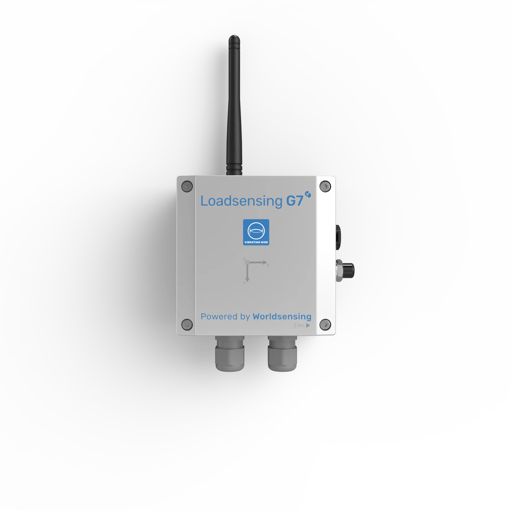
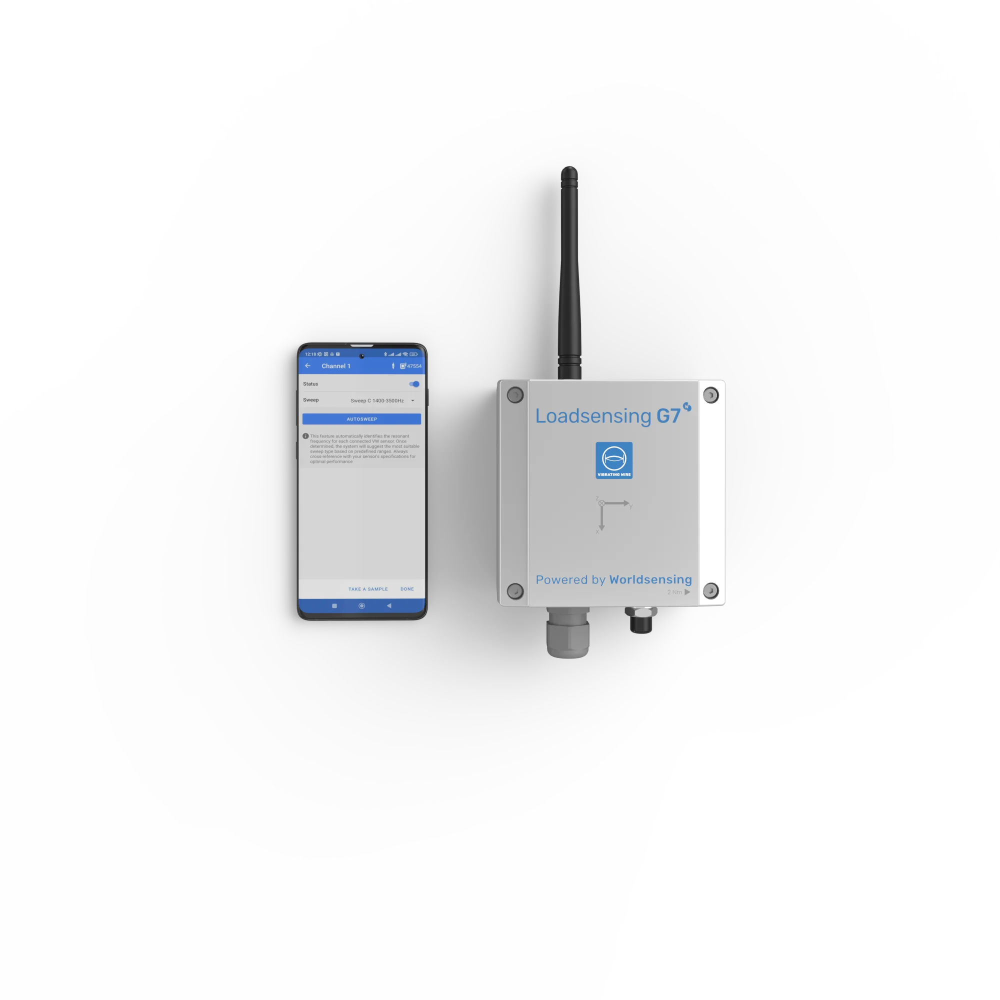

G7 Vibrating Wire Data Logger
Wirelessly stream data from all leading vibrating wire sensor manufacturers. Available in 6, 2 and 1-channel versions — with external antenna for maximum range or RCR variants with internal antenna for embedding in concrete.

6-Channel VW
Model: LSG7VW-6XL0
External Antenna
2-Channel VW
Model: LSG7VW-2XL0
External Antenna
1-Channel VW
Model: LSG7VW-1XL0
External AntennaWireless Data Acquisition for Geotechnical & Structural Monitoring
The G7 Vibrating Wire Data Logger automates data collection by connecting your vibrating wire instruments — such as piezometers, load cells, strain gauges and pressure cells — wirelessly to your monitoring systems, making it an essential tool for construction projects.
Available in 6, 2 and 1-channel versions with an external antenna for maximum range. RCR variants with an internal antenna are designed for easy encapsulation and embedding in precast concrete.
Pressure, temp & humidity sensors monitor internal conditions
Low-power accelerometer for trigger-based monitoring
Detect connectivity issues & reduce noise interference
Wireless configuration via Worldsensing App
Smart Monitoring Modes for Any Scenario
Advanced operational modes that optimize workflows, extend battery life, and reduce the number of devices required in the field.
Periodic Mode
Configure reporting periods from 30 seconds to 24 hours. Ideal for continuous, scheduled monitoring of structures with predictable data requirements.
Triggered Measurements Mode NEW
Motion detection sensor detects activity events from variations in absolute angle, angular velocity or acceleration. When significant movement is detected, it triggers the primary sensor to capture detailed measurements.
Customize when and how many measurements are taken — on event, after event, both, or across multiple events — with configurable delays and cooldown periods.
What Makes the G7 VW Data Logger Different
Purpose-built for unattended geotechnical and structural monitoring with edge intelligence and long-range wireless connectivity.
Long-Range Wireless
LoRaWAN communications reaching up to 15 km in open terrain. Up to 4 km in tunnels and 2 km from manholes. 4G LTE option for cellular backhaul.
Ultra-Long Battery Life
Up to 15 years of unattended operation on a single 3.6V D-size LSH20 Li-SOCl2 battery cell. User-replaceable without special tools.
IP68 Rated & Rugged
Industrial-grade IP68 enclosure for full submersion protection. Operating range from −40°C to +80°C — suitable for the harshest field conditions.
Universal Sensor Compatibility
Compatible with all leading vibrating wire sensor manufacturers. Reads sensors working on 300 to 7000 Hz frequencies — covering virtually all geotechnical VW sensors available.
Cloud & Edge Management
Configure locally via CMT Edge for single-network deployments, or connect to CMT Cloud for multi-project, multi-network oversight from anywhere.
Mobile App Configuration
Wireless Bluetooth setup via Worldsensing App. USB-C connector also available for direct configuration in the field — no laptop needed.
Monitoring Solutions for Every Environment
Explore the wide range of monitoring solutions the G7 Vibrating Wire Data Logger enables across geotechnical, structural and remote process monitoring.
Geotechnical Monitoring
In-ground Horizontal Movements
Multi-point borehole extensometer, in-place extensometer. Compatible with all major manufacturers of MPBX and IPX sensors.
Cross-crack Movements
Wireline extensometer, crackmeter, laser tiltmeter. Monitor tension cracks across landslides with displacement sensors.
Paste Backfill Monitoring
Pressure cells and piezometers at different orientations to interpret paste backfilling behavior and barricade load.
In-ground Displacement Between Anchors
Multi-point piezometer, multi-point borehole extensometer. High spatial resolution with in-place extensometer chains.
Total Pressure in Soils
Pressure cells for measuring effective stress and pore water pressure within embankments, tailings dams and fills.
Pore Water Pressure & Level
Piezometers and multi-point piezometers from all major manufacturers. 1, 2 or 6-channel configurations available.
Structural Monitoring
Radial & Tangential Stresses in Tunnels
Shotcrete pressure cell (NATM) for monitoring tensional states of concrete tunnel linings.
Strain & Stress in Steel Arch Supports
Vibrating wire strain gauges welded to steel arches for long-term strain measurement. Embeddable in shotcrete.
Movements Across Surface Cracks
Crackmeters and draw wire sensors connected to 1-channel VW data loggers or Piconode for surface crack monitoring.
Loads & Movement in Bearings & Joints
Extensometers, pressure transducers and crackmeters for pot bearing pressure and displacement monitoring.
Remote Process Monitoring
Superficial Drainage
V-notch weir connected to a 1-channel VW data logger for assessing proper functioning of drainage systems.
Open Channel Flow & Pond Level
VW weir monitors, V-notch and level sensors compatible with VW and Analog data loggers for flow and seepage monitoring.
Stresses in Shotcrete
Pressure cells for assessing tangential and radial stresses in shotcrete support for underground excavations.
Load in Rock Bolts & Ground Anchors
Load cells for monitoring anchor systems throughout their lifecycle — from load tests to long-term service.
G7 Vibrating Wire Data Logger Specifications
| Input Types | Vibrating wire and thermistor per channel |
|---|---|
| Secondary Sensors | Motion detection sensor, barometer, temperature sensor, humidity sensor |
| Device Variants | 6, 2, 1 channel with external antenna • 6, 2 channel (RCR) with internal antenna |
| Operational Modes | Periodic mode, Triggered Measurements Mode (TMM) |
| Memory | 73,500 readings (5 ch) • 200,000 readings (1 ch) |
| Power Source | 3.6V D-size LSH20 Li-SOCl2 battery cell |
| Operating Temperature | −40°C to +80°C |
| Weather Protection | IP68 |
| System Configuration | Worldsensing App (Bluetooth) • CMT Edge • CMT Cloud |
| Surge Protection | IEC61000-4-5, Class 2 |
| Detailed Sensor Specifications | |||||||||||||||||||||||||||||||||||||||||||||
|
Range: 300–7000 Hz
Accuracy: 0.008–0.013%
Temp: −40°C to +80°C
|
At 1 hr reporting:
VW 6X 15.9 yrs
VW 2X, 1X 13.6 yrs
VW 6X (TMM) 14.5 yrs
|
|||||||||||||||||||||||||||||||||||||||||||||
Need the full technical details?
Complete specs, diagrams, and compatibility info
Flexible Mounting for Any Environment
Choose the mounting configuration that best fits your deployment site.
Pole Mounting
Using aluminum plate WS-ACC-POLE-PL8 with 35 mm or 50 mm u-bolts for secure attachment to poles and posts.
Wall Mounting
Using external mounting brackets LS-ACC-MEC-MP (set of 2) for secure wall installation in tunnels and structures.
Horizontal & Surface Mounting
Using versatile plate LS-ACC-IN15-HP for horizontal and vertical surface deployment.
Got Questions About the G7 VW Data Logger?
Can't find what you're looking for? Contact our team — we're happy to help.
The G7 Vibrating Wire Data Logger is a wireless data acquisition IoT device that collects data from vibrating wire sensors and transmits them using long-range, low-power radio communications. It automates data collection by connecting instruments such as piezometers, load cells, strain gauges and pressure cells wirelessly to your monitoring systems.
The data logger connects to one or more vibrating wire sensors and transmits data via LoRa networks to a CMT Edge for local-access, single-network deployments. Data can also be transmitted via the internet from the Gateway to CMT Cloud for multi-project, multi-network deployment — accessible from anywhere.
The G7 Vibrating Wire Data Logger can be connected to all vibrating wire sensors on the market. It reads sensors working on the 0 to 7000 Hz frequency range, which covers virtually all geotechnical vibrating wire sensors available globally — from piezometers and strain gauges to pressure cells and load cells.
Battery life depends on the selected reporting period. With a 1-hour reporting interval, the G7 VW Data Logger achieves up to 15.9 years of battery life (6-channel version). With a 6-hour interval, it exceeds 20 years. The device uses a 3.6V D-size LSH20 Li-SOCl2 battery cell that is user-replaceable without tools.
In open sight, the range can reach up to 15 km (9.3 mi). In a city street, up to 4 km (2.5 mi). When placed in a manhole in a city street, the range is up to 2 km (1.2 mi), and in a tunnel it extends up to 4 km (2.5 mi). Range depends on terrain and environment.
Yes, the G7 Vibrating Wire Data Logger complies with IEC61000-4-5, Class 2 surge protection standards. If higher class protection is required, external surge protection devices can be installed. The IP68 rating also ensures reliable operation even when installed in manholes or other harsh environments.